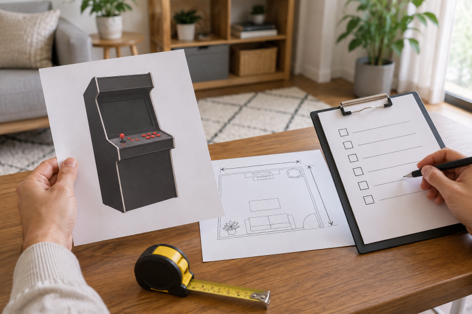

가정용 오락기를 고를 때는 가격만 보지 말고 설치할 공간, 기기 형태와 포함 구성, 자주 할 게임, 배송과 문의 방법을 함께 확인하세요. 같은 예산 안에서도 집의 환경과 사용하는 사람이 다르면 맞는 선택이 달라집니다. 확인되지 않은 내용은 판매자에게 질문한 뒤 결정하는 편이 좋습니다.

설치 공간과 이동 경로를 먼저 확인하세요
오락기를 둘 자리의 폭과 깊이뿐 아니라 현관, 복도, 엘리베이터처럼 들여올 경로도 살펴보세요. 설치 뒤 전원선과 화면 연결을 둘 여유도 필요합니다.
설치 공간과 이동 경로는 가격보다 먼저 확인해야 할 구매 조건입니다.
처음 설치할 때 확인할 항목을 참고해 장소를 점검할 수 있습니다.
기기 형태와 포함 구성을 비교하세요
노리박스 제품 목록에는 TV 연결형, 분리형, 신형HX와 게임팩처럼 서로 다른 형태의 상품이 별도로 안내됩니다. 상품명과 구성 설명을 대조하고 필요한 연결선과 조작부가 포함되는지 확인하세요.
기기 형태와 실제 포함 구성은 사용 환경에 맞춰 비교해야 합니다.
자주 할 게임과 조작 환경을 생각하세요
게임 수보다 자주 할 게임이 실제로 포함되는지, 함께 사용할 사람에게 조작부가 맞는지를 확인하세요. 목록이나 구성에서 알기 어려운 내용은 구매 전에 질문으로 남기세요.
자주 즐길 게임과 조작 환경이 맞는지가 선택의 기준입니다.
게임 포함 여부를 확인하는 방법도 함께 볼 수 있습니다.
배송과 문의 방법을 확인하세요
배송과 설치 준비, 구매 뒤 문의할 채널을 제품 정보와 함께 확인하세요. 제품자세히보기에서 상품 형태를 살피고 필요한 내용은 연락하기에서 문의 채널을 확인할 수 있습니다.
구매 전 문의는 설치 장소와 원하는 구성을 함께 전달할수록 확인하기 쉽습니다.